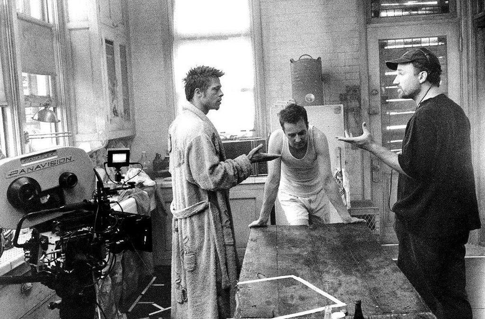

El estudio
Fight Club fue producida por Art Linson Productions en asociacion con Regency Enterprises, y distribuida por 20th Century Fox. Fue un proyecto de alto riesgo desde el principio: el material era oscuro, controversial y no tenia un final feliz claro.
El productor ejecutivo fue Arnon Milchan, conocido por financiar proyectos que no encajan en el molde de Hollywood tipico. La directora Laura Ziskin fue quien consiguio los derechos de la novela antes de que fuera muy conocida y convencio a Fincher de dirigirla.
Cuando los ejecutivos de Fox vieron el corte final de la pelicula entraron en panico. Estaban seguros de que era un desastre comercial. Fincher igual logro que se estrenara sin cortes importantes.
El proceso de filmacion

El rodaje principal duro aproximadamente seis meses, de junio a diciembre de 1998. David Fincher es famoso por su metodo de trabajo muy exigente: pide muchas tomas de cada escena hasta estar completamente conforme con el resultado.
Edward Norton conto en entrevistas que algunas escenas se repitieron mas de 70 veces. Para alguien que no estaba acostumbrado a trabajar asi, fue un proceso agotador pero que al final se noto en la calidad del producto.
La paleta visual oscura con tonos verdosos que caracteriza a la pelicula fue lograda en gran parte durante la postproduccion. Era una tecnica relativamente nueva en ese momento aplicada de forma digital.
Efectos especiales y tecnica
La pelicula uso varios efectos visuales que en 1999 eran bastante avanzados:
| Efecto | Descripcion |
|---|---|
| Secuencia de apertura | Animacion CGI del interior del cerebro del narrador, creada por Digital Domain. Costo meses de trabajo. |
| Fotogramas subliminales | Tyler Durden aparece en fotogramas individuales antes de ser presentado formalmente. Son invisibles en reproduccion normal. |
| Escena final | La destruccion de los edificios combina maquetas fisicas con efectos digitales. Costo alrededor de USD 5 millones. |
| Color grading | Postproduccion digital para lograr los tonos verdosos y apagados que caracterizan toda la pelicula. |
Equipo tecnico
Jeff Cronenweth fue el director de fotografia. Uso lentes y tecnicas de iluminacion muy especificas para lograr esa textura sucia e industrial.
The Dust Brothers compusieron la banda sonora. Es una musica electronica, abrasiva y disonante que refuerza perfectamente el estado mental del narrador durante toda la pelicula.
Alex McDowell diseño los sets de produccion. Cada ambiente esta pensado para reflejar el estado interior de los personajes: el departamento prolijo del narrador, la casa destruida de Paper Street, el sotano del bar.
James Haygood estuvo a cargo del montaje. El ritmo de la pelicula, que va acelerando hacia el final, es en gran parte mérito de su trabajo en la sala de edicion.